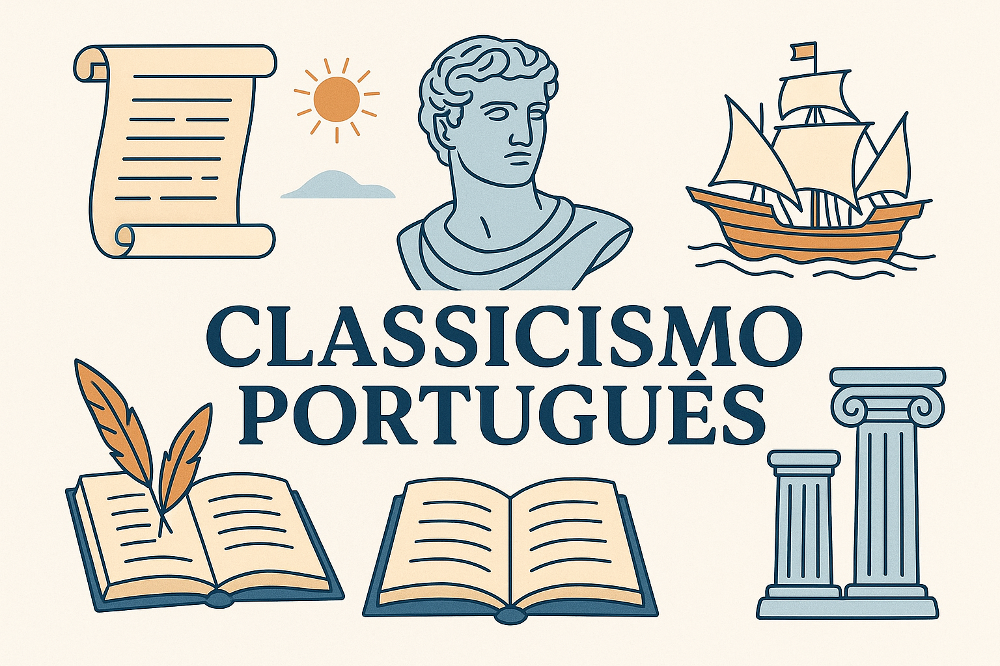

Classicismo Português
O Classicismo português foi um movimento literário e artístico do século XVI, marcado pelo equilíbrio, racionalidade e pela inspiração na cultura greco-latina. Esse estilo chegou a Portugal em plena época do Renascimento, influenciado pelos ideais humanistas italianos e pelo contexto de expansão marítima e científica vivenciado pelo país.
Foi uma estética que buscava a harmonia, a ordem, a beleza ideal e a valorização do homem como medida do mundo — princípios herdados da Antiguidade clássica.
Contexto histórico
O Classicismo português surge durante o reinado de Dom João III (1521–1557) e se estende até meados do século XVI. Nesse período:
- Portugal vivia o auge das Grandes Navegações, tornando-se uma das maiores potências marítimas da Europa.
- O contato com novas culturas e conhecimentos ampliou o horizonte intelectual dos escritores.
- O Humanismo já havia preparado o terreno para a retomada dos valores clássicos.
- A influência de autores italianos, como Petrarca e Dante Alighieri, chegou forte à Península Ibérica.
Características do Classicismo português
Racionalismo e equilíbrio
A arte clássica valoriza a razão, a clareza e o equilíbrio das formas. As obras evitavam exageros e buscavam perfeição formal.
Exemplo: A métrica dos sonetos de Camões, sempre com 14 versos bem estruturados (dois quartetos e dois tercetos), traduz essa harmonia.
Antropocentrismo
O homem passa a ser o centro do mundo e a medida de todas as coisas.
Exemplo: Nas Rimas de Camões, encontramos reflexões sobre os sentimentos humanos — amor, dor, saudade — em tom universal.
Imitação dos clássicos greco-latinos
Os escritores buscavam inspiração nos modelos da Antiguidade, como Virgílio, Horácio e Ovídio.
Exemplo: Em Os Lusíadas, Camões retoma a épica homérica, aproximando Vasco da Gama de Ulisses e Eneias.
Universalismo e temas elevados
As obras tratavam de valores universais, como a glória, a honra, o heroísmo, o amor e a busca pelo conhecimento.
Exemplo: O Canto I de Os Lusíadas exalta os navegadores portugueses como heróis universais.
Uso da poesia lírica e épica
- Lírica: sonetos, éclogas, odes e elegias.
- Épica: narrativa grandiosa sobre feitos históricos.
Exemplo: Os Lusíadas é o grande marco da poesia épica, enquanto os sonetos líricos de Camões são referência da poesia renascentista.
Autores do Classicismo português
Luís Vaz de Camões (1524?–1580)
O maior nome do Classicismo português e um dos maiores poetas da língua portuguesa.
- Obra lírica: Rimas (sonetos, odes, elegias).
- Obra épica: Os Lusíadas (1572).
Trecho de soneto (Rimas):
“Amor é fogo que arde sem se ver,
É ferida que dói e não se sente;
É um contentamento descontente,
É dor que desatina sem doer.”
António Ferreira (1528–1569)
Defensor da língua portuguesa contra a predominância do castelhano. Autor de Poemas Lusitanos e da tragédia Castro.
Francisco de Sá de Miranda (1481–1558)
Um dos introdutores do Classicismo em Portugal. Viajou à Itália, onde conheceu os modelos renascentistas. Introduziu o soneto na literatura portuguesa. Obras: Cartas, Églogas e Poesias Diversas.
Diogo Bernardes (1520?–1596)
Poeta lírico e bucólico, influenciado por Sá de Miranda. Suas obras incluem Rimas Várias e Flores do Lima.
Importância do Classicismo português
- Consolida a língua portuguesa como idioma literário de prestígio.
- Representa o auge do Renascimento literário em Portugal.
- Luís de Camões insere Portugal no cenário universal da literatura.
- Influenciou gerações posteriores como referência obrigatória da poesia clássica.
Conclusão
O Classicismo português foi muito mais do que uma escola literária: representou o momento em que Portugal, por meio das letras e das navegações, se projetou como uma potência universal. Sua marca está principalmente em Camões, mas também em Sá de Miranda, António Ferreira e Diogo Bernardes, que ajudaram a criar uma literatura sólida, equilibrada e duradoura.
O movimento deixou como herança uma busca incessante pela perfeição da forma, pela universalidade dos temas e pelo ideal humanista que coloca o homem no centro das reflexões artísticas e filosóficas.